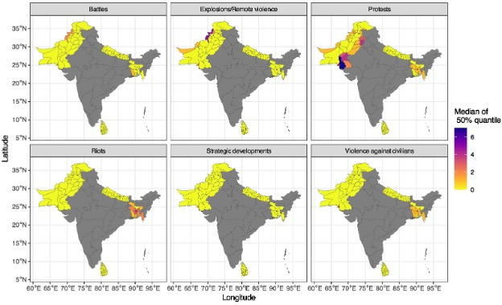
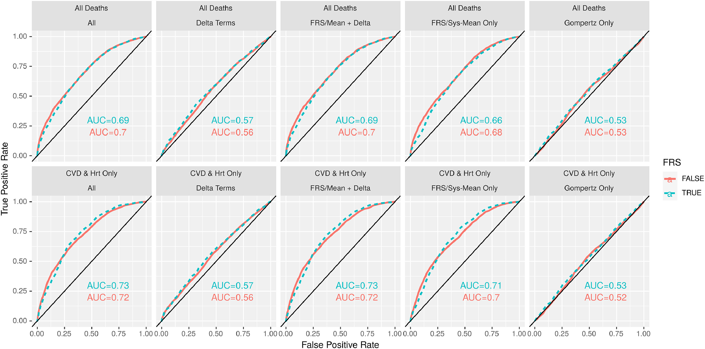
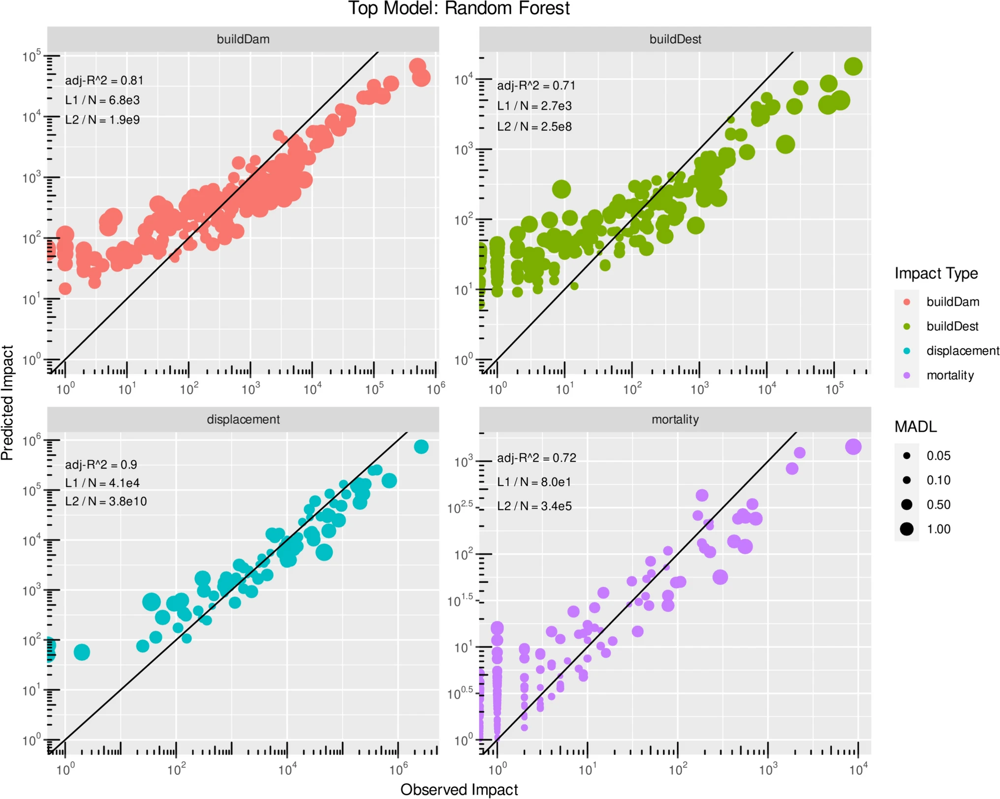
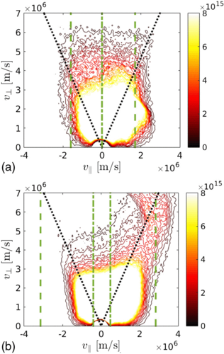
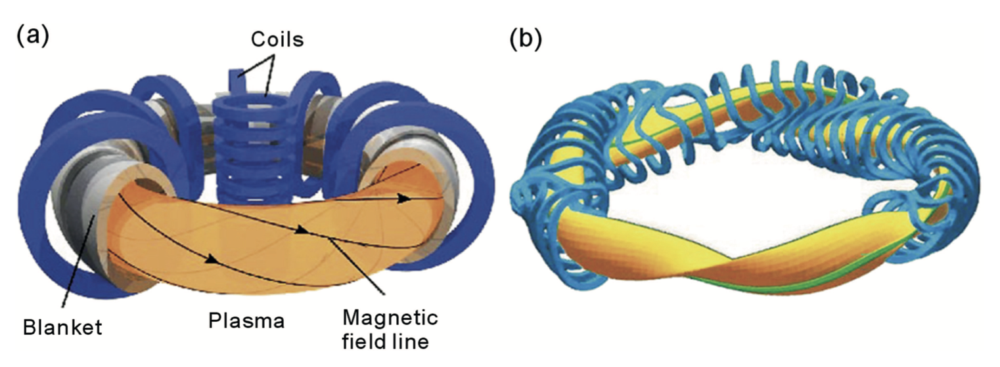

My career in science has been rather non-linear. I have worked in physics,
statistics, the humanitarian and UN sector and, most recently, in medical technology.
Below, I highlight some articles that I believe represent some of the more important
contributions of my career in science. To see my full publication record, however,
please go to my
Google Scholar profile.
A Bayesian Approach for Earthquake Impact Modelling
Immediately following a disaster event, such as an earthquake, estimates of the damage extent play a key role in informing the coordination of response and recovery efforts. We develop a…
Immediately following a disaster event, such as an earthquake, estimates of the damage extent play a key role in informing the coordination of response and recovery efforts. We develop a novel impact estimation tool that leverages a generalised Bayesian approach to generate earthquake impact estimates across three impact types: mortality, population displacement, and building damage. Inference is performed within a likelihood-free framework, and a scoring-rule-based posterior avoids information loss from non-sufficient summary statistics. We propose an adaptation of existing scoring-rule-based loss functions that accommodates the use of an approximate Bayesian computation sequential Monte Carlo (ABC-SMC) framework. The fitted model achieves results comparable to those of two leading impact estimation tools in the prediction of total mortality when tested on a set of held-out past events. The proposed method provides four advantages over existing empirical approaches: modelling produces a gridded spatial map of the estimated impact, predictions benefit from the Bayesian quantification and interpretation of uncertainty, there is direct handling of multi-shock earthquake events, and the use of a joint model between impact types allows predictions to be updated as impact observations become available.
This article examines the role of statistics in the humanitarian sector, with a particular focus on disasters caused by natural hazards. It begins by outlining current applications, including primary data…
This article examines the role of statistics in the humanitarian sector, with a particular focus on disasters caused by natural hazards. It begins by outlining current applications, including primary data collection, anticipatory action frameworks, Earth observation, mobile positioning data, and artificial intelligence. It then highlights key challenges such as gaps and biases in disaster impact and response data, difficulties in communicating statistical findings clearly, inequities in aid allocation, and the widespread outsourcing of statistics-related work. In exploring future applications, the article discusses the potential of impact-based early warning models, dynamic population data, and artificial intelligence to enhance communication and decision-making. Throughout, emphasis is placed on the need for interoperable systems as well as ethical and inclusive data practices. In doing so, the article presents statistics as both a diagnostic and strategic tool for strengthening the effectiveness, fairness, and responsiveness of humanitarian action in disaster contexts.

Bayesian spatiotemporal modelling of political violence and conflict events using discrete-time Hawkes processes
(2026) Journal of Royal Statistical Society Series A: Statistics in Society
The monitoring of conflict risk in the humanitarian sector is largely based on simple historic averages. The overarching goal of this work is to assess the potential for using a…
The monitoring of conflict risk in the humanitarian sector is largely based on simple historic averages. The overarching goal of this work is to assess the potential for using a more statistically rigorous approach to monitor the risk of political violence and conflict events in practice, and thereby improve our understanding of their temporal and spatial patterns, to inform preventative measures. In particular, a Bayesian, spatiotemporal variant of the Hawkes process is fitted to data gathered by the Armed Conflict Location and Event Data (ACLED) project to obtain sub-national estimates of conflict risk in South Asia over time and space. Our model can effectively estimate the risk level of these events within a statistically sound framework, with a more precise understanding of uncertainty than was previously possible. The model also provides insights into differences in behaviours between countries and conflict types. We also show how our model can be used to monitor short and long term trends, and that it is more stable and robust to outliers compared to current practices that rely on historical averages.

Short-term and mid-term blood pressure variability and long-term mortality
Until recently, there has been a focus on exploring the influence of average blood pressure (BP) on risk of mortality. We go beyond average BP to also investigate mortality risk…
Until recently, there has been a focus on exploring the influence of average blood pressure (BP) on risk of mortality. We go beyond average BP to also investigate mortality risk with respect to variation in BP over 2 timescales—short-term variation among multiple measures at 1 visit, and medium-term variation among the measures at 2 visits several months apart. We present an application of Bayesian hierarchical modeling to the problem of estimating the effect of BP variability on all-cause and cardiovascular mortality. We use data from the Third National Health and Nutrition Examination Survey linked with up to 27 years of mortality follow-up. We find that medium-term systolic BP variability had a very significant predictive value for all-cause mortality in addition to mortality from cardiovascular disease, cerebrovascular disease and heart-attacks combined, approximately 1/3 as large as the well-established impact of mean systolic BP. Medium-term diastolic variability had an additional, although smaller, predictive effect. Short-term variability, in contrast, had little or no measurable predictive value. The medium-term variability effect persisted when controlling for Framingham Risk Score.

Data-driven earthquake multi-impact modeling: a comparison of models
In this study, a broad range of supervised machine learning and parametric statistical, geospatial, and non-geospatial models were applied to model both aggregated observed impact estimate data and satellite image-derived…
In this study, a broad range of supervised machine learning and parametric statistical, geospatial, and non-geospatial models were applied to model both aggregated observed impact estimate data and satellite image-derived geolocated building damage data for earthquakes, via regression- and classification-based models, respectively. For the aggregated observational data, models were ranked via predictive performance of mortality, population displacement, building damage, and building destruction for 375 observations across 161 earthquakes in 61 countries. For the satellite image-derived data, models were ranked via classification performance (damaged/unaffected) of 369,813 geolocated buildings for 26 earthquakes in 15 countries. Grouped k-fold, 3-repeat cross validation was used to ensure out-of-sample predictive performance. Feature importance of several variables used as proxies for vulnerability to disasters indicates covariate utility. The 2023 Türkiye–Syria earthquake event was used to explore model limitations for extreme events. However, applying the AdaBoost model on the 27,032 held-out buildings of the 2023 Türkiye–Syria earthquake event, predictions had an AUC of 0.93. Therefore, without any geospatial, building-specific, or direct satellite image information, this model accurately classified building damage, with significantly improved performance over satellite image trained models found in the literature.

Identification of an optimized heating and fast ion generation scheme for the Wendelstein 7-X stellarator
A Doppler shifted resonance minority species ion cyclotron range of frequency (ICRF) scheme for heating neutral beam ions has been identified and optimized for the Wendelstein 7-X stellarator. Compared with…
A Doppler shifted resonance minority species ion cyclotron range of frequency (ICRF) scheme for heating neutral beam ions has been identified and optimized for the Wendelstein 7-X stellarator. Compared with more conventional methods, the synergetic scheme increases the normalized core collisional power transfer to the background plasma, and induces larger concentrations of energetic ions. Simulations in the intricate 3D magnetic stellarator geometry reveal an energetic distribution function that is only weakly anisotropic, and is thus relevant to fast ion and alpha particle driven Alfvén eigenmode experimental preparation. Quasilinear theory and simulations of the Joint European Torus indicate that the excellent confinement properties are due to increased velocity diffusion from ICRF interaction along the magnetic field lines. Agreement is found between SCENIC simulations and Joint European Torus experimental measurements for the total neutron rate and the energy distribution of the fast ions.

Development and optimisation of advanced auxiliary ion heating schemes for 3D fusion plasma devices
The magnetic confinement fusion devices known as the tokamak and the stellarator are progressing towards becoming viable commercial nuclear fusion reactor designs. Both ap- proaches require improvements in the applied…
The magnetic confinement fusion devices known as the tokamak and the stellarator are progressing towards becoming viable commercial nuclear fusion reactor designs. Both ap- proaches require improvements in the applied heating sources and in the particle and energy confinement in order to become power efficient and cost effective. A better understanding of the physics associated to the different heating techniques is required to optimise perfor- mance. Ion Cyclotron Range-of-Frequency (ICRF) waves and Neutral Beam Injection (NBI) are two auxiliary fast-ion heating methods that are commonly used in tokamak and stellarator fusion devices. The largest tokamak in the world, ITER, is currently being built in Cadarache, France, and the largest stellarator project, Wendelstein 7-X (W7-X), started operation in 2015. For the latter, NBI operation will start in 2018, and ICRF experiments are foreseen in 2020. The heating scenarios to be applied experimentally in both of these machines are currently being developed. This requires the development of an understanding of how the heating methods work, proposals to be made for optimisation, and theoretical and numerical predictions to be made in advance. A known issue for stellarator devices is the relatively poor confinement of energetic particles. This is an issue for the auxiliary power efficiency of the device. Fusion reactions produce alpha particles of large energies (⠌ 3.6MeV) that should be well confined and collide with the background plasma such that the plasma becomes self-heating. This reduces the requirements on the external heating sources to main- tain ideal fusion conditions, assuming these fusion alphas are themselves confined. The work presented in this thesis uses the SCENIC code package to calculate the heating performance and energetic particle production and confinement of a range of basic and advanced heating scenarios involving ICRF and NBI. The SCENIC code self-consistently calculates the magnetic equilibrium, the RF-wave propagation and absorption, the neutral beam injection ionisation and deposition, and evaluates the energetic particle distribution function evolution in the presence of the applied heating scheme. The main results of this thesis indicate that for the Wendelstein 7-X stellarator, both the 3-ion species and the synergetic RF-NBI Doppler shifted resonance heating schemes, developed in this thesis, generate highly energetic ion populations. However, the 3-ion species scheme is shown to not be ideal for energetic particle experiments for multiple reasons. The results for this heating scheme are very sensitive to the magnetic equilibrium. In particular, it is found that the standard mirror equilibrium produces and confines only up to 0.15MeV ions. Moreover, the densities of such fast ion populations are low, such that experimental detection from probes such as Fast Ion Loss Detectors (FILD) is not feasible. The 3-ion species scheme is only capable of producing particles that are deeply trapped with a strong peaking in the pitch angle. Typically, such particles have worse confinement in the 3D equilibrium. With respect to the heating transferred to the core background plasma and the generation of highly energetic particles, the most successful heating scheme applied to W7-X is the synergetic RF-NBI doppler shifted resonance heating scheme, developed for the first time in this thesis, predicting large densities of MeV range ions isotropic in pitch angle space.